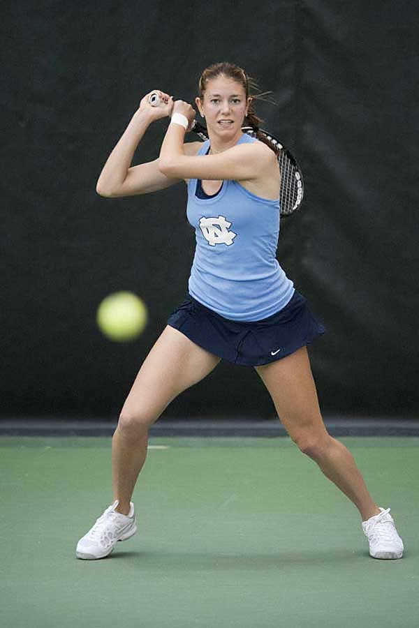
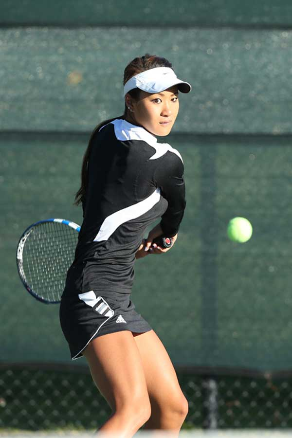

Alumni
Stephanie Chang
UC Berkeley

Zoe De Bruycker
North CarolinaJohn Lamble
Santa Clara UniversityEllen Tsay
Stanford UniversityAndy Huang
UCSB

Mariska Chamdani
Brown UniversityJustin Chan
Dartmouth UniversityZhongming Chen
Cornel UniversityWendi Kong
MITBrian Sun
U. of ChicagoJames Chen
SwarthmoreChris Wen
ColumbiaArjun Sarkar
UCLAChaya Rajeev
Cal Poly
Sylvia Li
Harvard
Srinidhi Raghavan
UPenn
Sam Critser
MichiganAllen Xu
West Point
Kelly Lamble
Santa Clara
Chris Mark
Davidson
Katie Le
Santa Clara
Alan Shin
U. of Idaho
Noelle Eades
UC Davis
Diane Phan
Acad. of Art U.Kerri Kummer
San Jose State
Ken Kao
Stanford
Paulina Bajet
Villanova
Emma Critser
St. Mary's
Thomas McGee
UC Davis
Lisa Liang
UC Berkeley
David Hsu
Stanford
Justin Sun
AmherstMore Alumni
| Graduate Name | School |
|---|---|
| Christine Elazio | Lewis and Clark |
| Alex Du | Carnegie Mellon |
| Michael Feldman | Stevens Institute of Technology |
| Hannah Folk | UCSD |
| Alex Harrigan | UC Irvine |
| Josh Huang | Carnegie Mellon |
| Catherine Dickerson | Davidson |
| Winnie Kong | MIT |
| Anthony Lim | UCLA |
| Steph Luk | Sonoma St. |
| Christine Nguyen | SJ State |
| Rohan Harayanan | UC Santa Cruz |
| Vijay Priya Ganesan | UC Riverside |
| Arthur Yu | UC Irvine |
| Lauren Sinatra | Syracuse |
| Aaron Ellis | Penn State |
| Mitch Del Rosario | San Francisco U. |
| Henry Nguyen | Santa Clara |
| Edward Ang | Carnegie Mellon |
| Melissa Arthur | St. Mary's |
| Sarah Cai | Cal Tech |
| Sophie Chang | Harvard |
| Tommy Wong | UC Irvine |
| David Zhu | Washington U. |
| Sarah Cai | Cal Tech |
| Albert Jou | Texas |
| Jenny Chen | Stanford |
| Catherine Ho | Carnegie Mellon |
| Jana Lee | Santa Clara |
| Kelly Hu | UCSD |
| Kara Hinton | Azuza Pacific |
| Maks Tsvetkov | USC |
| Sandra Flora | SJ St. |
| Ibrahim Ijaz | UC Davis |
| Kristina Housepyan | Maryland |
| Taylor Hoppe | Purdue |
| Amanda Arthur | Santa Clara |
| Cori Sidell | Carnegie Mellon |
| Catherine McGaughy | ASU |
| Natalie Spievack | Wisconsin |
| Polak Goyal | Harvard |
| Sirish Narayanan | UCSB |